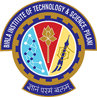
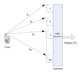

|
Hi everyone! I am Atharva Anand Joshi, graduate student at Carnegie Mellon University. I am pursuing master’s in Electrical and Computer Engineering with concentration in AI/ML Systems. I am intrigued by the application of machine learning algorithms in finance, marketing and audio use cases. My research interests include deep learning, representation learning and signal processing. Presently, I am exploring DL-based algorithms for Noise Suppression in Headsets at Hewlett-Packard - Poly. I completed my B.E in Electrical and Electronics Engineering from BITS Pilani in July, 2022. During my undergrad, I worked on research projects under the guidance of Dr Syed Mohammad Zafaruddin (SM Research Group) and Dr Ananthakrishna Chintanpalli. Before joining CMU, I worked as an Analyst at American Express, AI Labs . Here, I explored modelling approaches involving a blend of Tabular deep learning with Tree-based algorithms for Credit Default Prediction - What is the probability of a given customer failing to repay their outstanding debt in near future? This helps in setting the credit line and making other such credit-related decisions. During my internship at AmEx, I developed a template-based framework that allows users to seamlessly create and deploy their end-to-end Self Learning pipelines for Sequence Models. I have also interned at Adobe Research, India with mentors Dr Atanu Sinha and Dr Sunav Choudhary. Here, we created concise user representations which can be projected onto edge server, providing faster marketing services. Feel free to reach out for research collaboration, academic guidance (if you are an undergraduate student from BITS) or even just for a chat! For GRE and TOEFL preparation guidance, especially under time contraints do check out this repository. Email / Resume / Google Scholar / Linkedin / Github |
{kind=link}
|
|
|
Carnegie Mellon University, Pittsburgh, PA
Master of Science in Electrical and Computer Engineering (December 2024) Concentration: AI/ML Systems GPA: 4.0/4.0 |
|  |
Birla Institute of Technology and Science, Pilani
B.E. Electrical and Electronics Engineering (July 2022) GPA: 9.49/10 GRE: 331/340 (AWA: 4/6) TOEFL: 109/120 |
|
|
|
Hewlett-Packard Inc.
Poly - Research and Development May 2023 - August 2023 Deep Learning for Noise Suppression on Poly Headsets |
|
American Express, Artificial Intelligence Labs
AiDa Deploy Team January 2022 - December 2022 (Intern and Fulltime) 1) Credit Default Prediction through Deep Learning 2) Template-based Development and Deployment on AiDa |
|
Adobe Research, India
Big Data Experience Lab May 2021 - August 2021 Edge Computing for Marketing Technology |
|
[1] A. A. Joshi, H. Settibhaktini and A. Chintanpalli, "Modeling Concurrent Vowel Scores Using the Time Delay Neural Network and Multitask Learning," in IEEE/ACM Transactions on Audio, Speech, and Language Processing, vol. 30, pp. 2452-2459, 2022, doi: 10.1109/TASLP.2022.3192096. (Link) [2] A. A. Joshi, P. Bhardwaj and S. M. Zafaruddin, "Terahertz Wireless Transmissions with Maximal Ratio Combining over Fluctuating Two-Ray Fading," 2022 IEEE Wireless Communications and Networking Conference (WCNC), 2022, pp. 1575-1580, doi: 10.1109/WCNC51071.2022.9771926. (Link) |
|
S. Chakraborty, S. Choudhary, A. Sinha, S. Nair, M. Ghuhan, Y. Gagneja, A. Joshi, A. Tyagi, S. Gupta, “Generating Concise and Common User Representations for Edge Systems from Event Sequence Data Stored on Hub Systems”, US 17/849,320, Filed Jun 24, 2022. |
|
|
|
Teaching Assistant for BITS F312 - Neural Networks and Fuzzy Logic
Worked under the guidance of Dr Surekha Bhanot and Dr Bijoy Krishna Mukherjee. For NNFL resources and project ideas feel free to visit Team NNFL. Here's a presentation on how to read research papers: Demystifying Research Papers |
|
|
|
Proactive Servicing: Guess What? (Amex ML Challenge)
Combined event sequences and demographic data to predict customer intent at the start of the Ask Amex chat session. The approach involved joint training of Bidirectional GRU with Feedforward Networks. Attained a validation top-5 accuracy score of 0.768. Our solution made it to the top 10 leaderboard and was selected for internal presentation. |
|
Concurrent Vowel Identification using TDNN-MTL
Predicted the effect of fundamental frequency (F0) difference on the identification scores in a concurrent vowel identification experiment using Deep Learning. From the neuron responses generated by the Auditory Nerve Model, a temporal network architecture was used to model short-term and long-term dependencies. |
|
Biomedical Image Segmentation using Convolutional Neural Networks
A Keras implementation for the research paper U-Net: Convolutional Networks for Biomedical Image Segmentation (Olaf Ronneberger, Philipp Fischer, and Thomas Brox). Includes Overlap Tile Strategy and Random Elastic Tranformations. Code |
|
Drone Object Detection
Lightweight CNN model trained on DOTA-v1.0 dataset and deployed to the Nvidia Jetson Nano for real-time object detection. Code |
|  |
Terahertz wireless transmissions with MRC receiver over FTR fading
Framework to perform numerical analysis on FTR channel models obtained upon combining small-scale fading and antenna misalignment effects. This analysis can also be verified using Monte-Carlo Simulations. Code |
|
I have been an avid practitioner and performer of Hindustani Classical Vocal Music for the past fourteen years.
|
|
My Instagram Channel
On this channel, I post Classical music, Ghazals and Bollywood covers during my free time. Link |
 |
Ragamalika, the Classical Music and Dance Club of BITS Pilani
Joint Coordinator Composed and performed music for our semester productions: Nritya Ranjani and Sangamam Managed external professional concerts: We've had the opportunity to host some wonderful artists in the past including Pandit Jayateerth Mevundi, Pandit Abhishek Raghuram and IndoSoul by Karthick Iyer. Instagram / Youtube / Facebook |
|
Thanks Jon Barron for this template. |